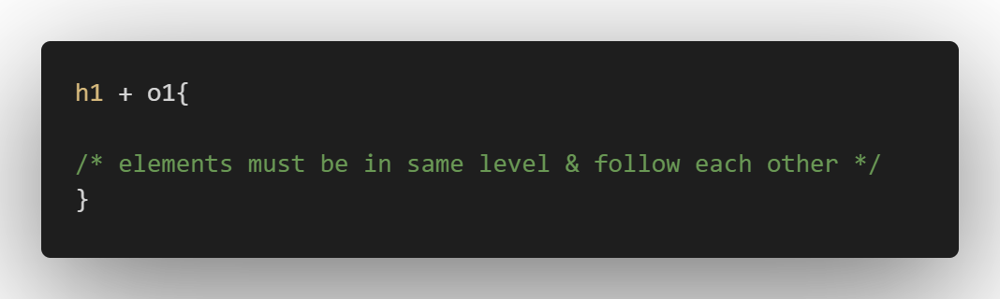

ADVANCED SELECTORS
CSS selectors: some selectors follow DOM.
Descendant Selectors:
Child Selectors:
Adjacent Siblings:

ID SELECTORS:
- pound ( # )
- used to identify a single element in DOM.
- most preferable to work with Javascript but not with CSS.

CLASS SELECTOR:
- Period/Dot ( . )
- used to identify an element in DOM.
- usually for selecting part of special class of items.

Narrowing the Scope:
Expanding the Scope:
UNIVERSAL SELECTOR:
- star ( * )
- applies styling to every element on the page.
ATTRIBUTE SELECTORS:
-> can also include operators on Attribute Selectors.